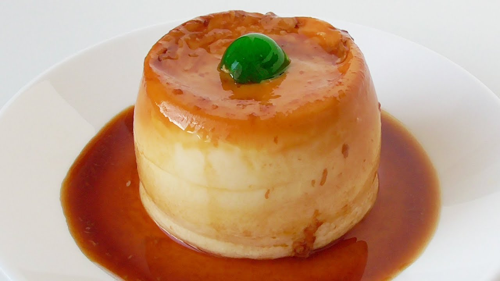

← Volver al módulo 1

Flan Casero
Delicioso flan casero, cremoso y suave, ideal para postres grandes y decoración con frutas.
Ingredientes
- 1 taza de azúcar
- 4 huevos
- 1 cucharada de esencia de vainilla
- Papel estañado o aluminio
- 1 lata de leche evaporada
- 1 lata de leche condensada
Decoración
- Duraznos en lata
- Fresas (4 unidades)
- Jalea roja
- Base de torta para 20 personas
Preparación
Realizar el mise en place.
Llevar al fuego una olla con azúcar y agua hasta obtener color caramelo.
Licuamos los huevos con la esencia de vainilla hasta obtener consistencia cremosa.
En un molde, vaciar el caramelo y esparcirlo bien.
Verter la mezcla de huevos en el molde y tapar con papel estañado.
Llevar al horno en baño maría a 180 °C por 2 horas.
Dejar enfriar y llevar a refrigerar antes de decorar.